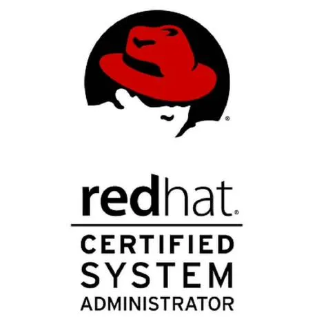
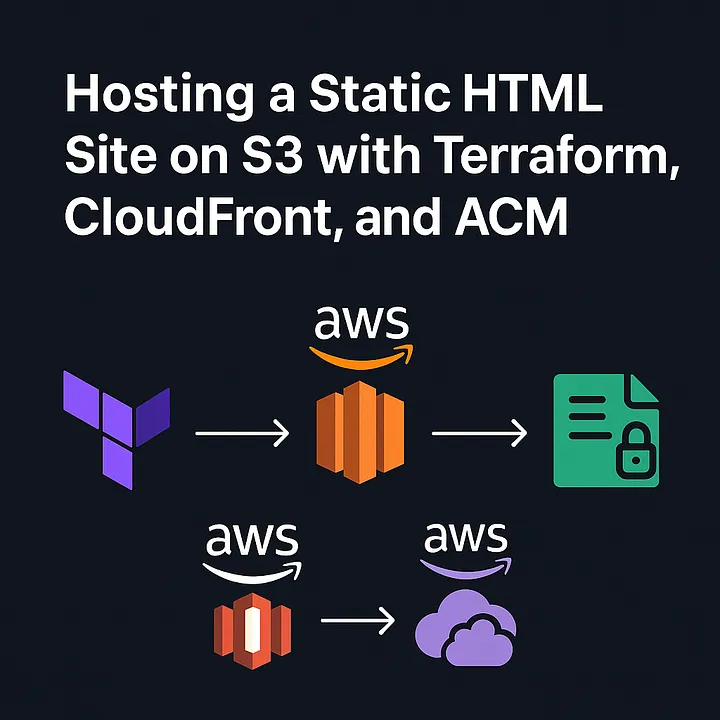
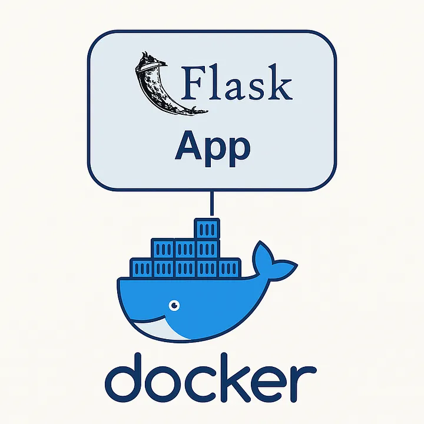
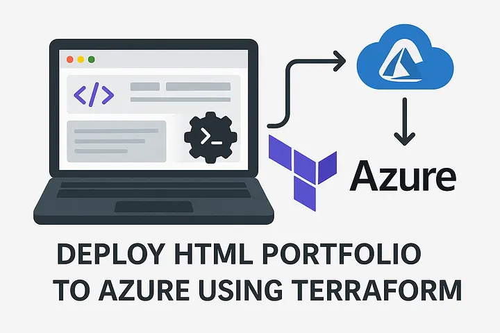

CloudFront + ACM + Terraform
End-to-end setup for hosting a static HTML site securely on AWS S3 with CDN and free SSL using Infrastructure as Code.
Senior Cloud, DevOps & Site Reliability Engineer specializing in AWS, Azure, Kubernetes, Terraform & Observability. Outside of work, I actively research emerging cloud-native technologies—documenting hands-on tutorials on my YouTube channel and Medium blog to stay razor-sharp on modern stacks like IaC, Observability, and MLOps.
Creating deep-dive DevOps & SRE walkthroughs forces me to test edge cases, stay current with the latest cloud-native tools, and bring clear documentation habits to my day-to-day engineering team.
Hello! I'm Stephen Sam, a DevOps and Site Reliability Engineer passionate about building scalable, resilient, and high-performing systems. My journey in tech is driven by a deep commitment to cloud automation, system reliability, and continuous technical growth.
With a strong foundation in enterprise Linux (RHCSA Certified) and modern DevOps practices, I specialize in designing automated CI/CD workflows, improving system observability, and maintaining high uptime through proactive monitoring and L3 incident response across AWS, Microsoft Azure, Kubernetes, and Terraform.
To stay constantly updated with fast-evolving cloud and AI infrastructure ecosystems, I document my hands-on experiments and create in-depth technical content on YouTube (Stephen Sam DevOps Malayalam) and Medium—covering topics from Terraform and Observability to MLOps.

Enterprise Linux Administration, Security, Storage & System Triage
AZ-104 · Identity, Governance, Storage, Compute & Virtual Networks
Technology moves fast. Creating technical videos and engineering articles in my spare time keeps my hands-on skills sharp across the latest DevOps, Observability, and MLOps tools—allowing me to bring fresh, battle-tested solutions and clear knowledge-sharing to my team.
Demonstrating hands-on mastery and staying updated on modern DevOps, SRE, Infrastructure as Code, and MLOps through practical video series and technical writing.
Zero to Hero in Malayalam
A comprehensive deep-dive into modern production observability stacks—implementing full-stack telemetry, custom dashboards, log aggregation, and alerting.
Zero to Hero in Malayalam
Hands-on Infrastructure as Code series demonstrating how to provision, version, and automate cloud architectures across AWS and Azure from scratch to advanced.
Zero to Hero in Malayalam
Exploring Machine Learning Operations—applying DevOps automation, containerization, CI/CD, and monitoring principles to modern AI/ML deployment pipelines.

AWS · TERRAFORMEnd-to-end setup for hosting a static HTML site securely on AWS S3 with CDN and free SSL using Infrastructure as Code.

DOCKER · PYTHONA step-by-step practical guide taking a Python Flask application from local code to a reproducible Docker container.

AZURE · TERRAFORMA comprehensive walkthrough automating the deployment of a static HTML portfolio to Microsoft Azure Storage via Terraform.
Hands-on production experience across Level 3 AWS infrastructure support, multi-cloud DevOps engineering, and Linux administration.
Providing advanced L3 support for AWS infrastructure, driving DevOps practices, resolving complex production escalations, and optimizing cloud environments for performance and reliability.
Managed cloud infrastructure across AWS and Azure for development, UAT, and production environments, ensuring high availability, automated CI/CD delivery, and scalability.
Managed and maintained Linux-based servers (CentOS, Ubuntu), including LAMP stacks and custom web hosting environments, ensuring high uptime and performance.
Delivered L1 support to clients for VPS and shared hosting environments. Assisted with WHM/cPanel troubleshooting, DNS setup, and SSL configurations.
Core technologies I use to architect, automate, and observe cloud infrastructure.
Multi-cloud infrastructure design, high-availability VPCs, CDN edge security, and cost optimization.
Automated build, test, and zero-downtime deployment pipelines across modern Git workflows.
Microservice containerization, multi-stage builds, and resilient Kubernetes cluster management.
Declarative multi-cloud provisioning, remote state locking, reusable modules, and drift detection.
Full-stack metrics, centralized logging, custom Grafana dashboards, and proactive incident alerting.
Hardened Linux administration, Bash automation, networking/security, and modern MLOps workflows.
Have an engineering opportunity, a project in mind, or just want to connect? My inbox is always open. Whether you have a question or just want to say hi, I'll try my best to get back to you!